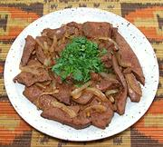

|
Beef Liver, FriedEast Africa - Tanzania - Maini ya Ng'ombe ya kukaanga | ||||
| Serves: Effort: Sched: DoAhead: |
2 w/rice ** 2 hrs Prep |
This is possibly my favorite liver dish. It's a versatile dish, easy to make, and can be served as an appetizer with French Fries or similar, as a main dish with rice or some form of potatoes, or as a meaty side dish for four. | |||
|
1-1/2 ------- 3 1/3 1 1 1/2 ------- 10 1/2 1 ------- 3 1/4 ------- |
# --- cl in t t t --- oz in t --- T c --- |
Beef Liver (1) -- Marinade Garlic Ginger root Cumin seed Pepper, black Salt -- Onions Onions Ginger root Cumin, ground ------------- Oil Water -- Garnish Parsley |
PREP - (1-1/2 hrs - 25 min work)
|